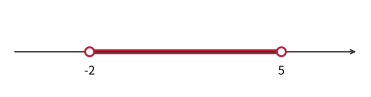
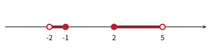
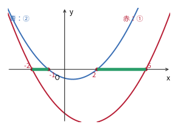

ホーム ＞ 数学I ＞ 2次不等式
連立不等式\[\begin{cases}x^2-3x-10<0\\ x^2-x-2\geqq0\end{cases}\]を解け。
それぞれの不等式を別々に解いて数直線に描き、共通部分を求める。2次不等式は、因数分解して「グラフが \(x\) 軸の下か上か」で解く。

①と②の重なりは下図の太線。

\(-2<x\leqq-1\) と \(2\leqq x<5\)。

\(x=-1\)：①\(1+3-10=-6<0\)、②\(1+1-2=0\geqq0\) で両方成立。\(x=2\)：①\(4-6-10=-12<0\)、②\(4-2-2=0\geqq0\) で両方成立。
【答案（テストに書く形）】
答